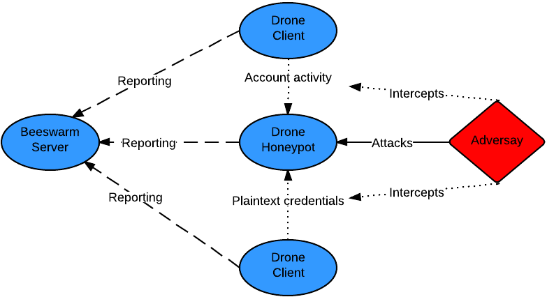
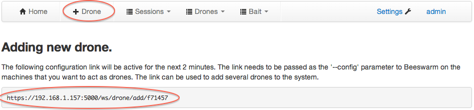

Introduction
Beeswarm is an active IDS project that provides easy configuration, deployment and management of honeypots and clients. The system operates by luring the hacker into the honeypots by setting up a deception infrastructure where deployed drones communicate with honeypots and intentionally leak credentials while doing so.
Getting up and running
For this scenario we will presume that 5 linux virtual machines are available, one VM will run the beeswarm server and the rest will be used as drones.
Installing and starting the server
On the VM to be set up as the server, perform the following steps. Make sure to write down the administrative password.
$ pip install beeswarm
Downloading/unpacking beeswarm
...
Successfully installed Beeswarm
Cleaning up...
$ mkdir server_workdir
$ cd server-workdir/
$ beeswarm --server
...
****************************************************************************
Default password for the admin account is: uqbrlsabeqpbwy
****************************************************************************
...Installing beeswarm on the drones
On each machine that will be used as a drone, install Beeswarm using pip:$ pip install beeswarm
Downloading/unpacking beeswarm
...
Successfully installed Beeswarm
Cleaning up...Starting the drones
To activate the drones, extract the temporary configuration URL from the beeswarm managment interface by clicking the + Drone headline:  Use the URL to link each drone to the beeswarm server:$ mkdir drone_workdir
$ cd drone_workdir
$ beeswarm --config https://192.168.1.157/drones/add/f71457Drone configuration and monitoring
After installation, the management interface can be reached on port 5000 where drones can be configured and security events can be monitored.
Main page of the management interface:
 Monitoring system activity with examples of attacks using intercepted credentials, brute force attempts and a few bait sessions:
Monitoring system activity with examples of attacks using intercepted credentials, brute force attempts and a few bait sessions:

Authors and Contributors
The Beeswarm project is being lead by Johnny Vestergaard under the umbrella of The Honeynet Project. The project was chosen for Google Summer of Code 2013 where Aniket Panse was selected to work on the project.